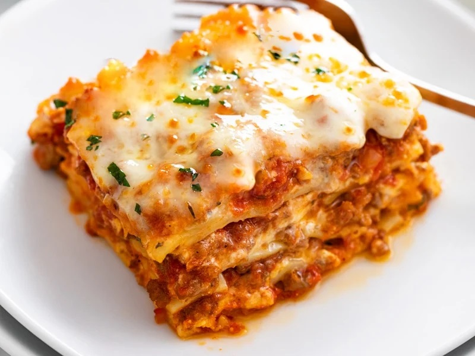

Lasagna

Description
Ingredients
- Ground beef 400g
- 1 chopped onion
- 2 boats of garlic
- 2 spoons of tomato paste
- 1 dl water
- Cheese until you're out of cheese
Steps
- Brown the ground beef dude
-
Chop your onion and garlic and let it simmer with the ground beef
until golden
- add paste when beef + onion is good to go
- add water and let it simmer more hehe
- add the cheese son